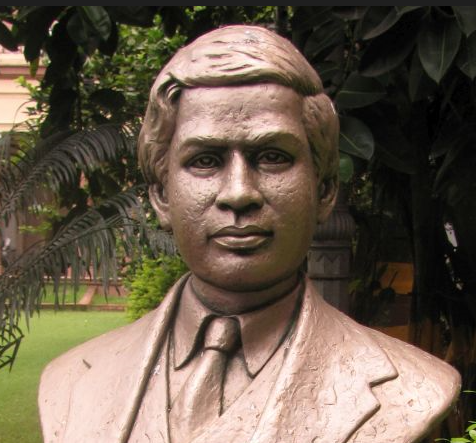
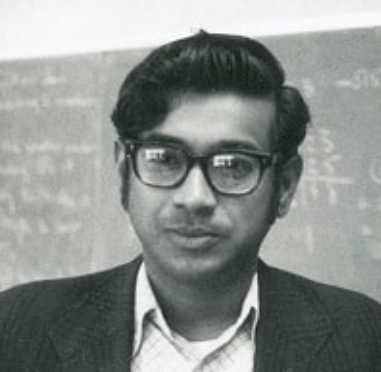

Srinivasa Ramanujan FRS doğumlu Srinivasa Ramanujan Aiyangar , IPA: [sriːniʋaːsa ɾaːmaːnud͡ʑan 1887; 22 Aralık 1920) [2] [3] Hindistan'da İngiliz Yönetimi sırasında yaşayan Hintli bir matematikçiydi . Saf matematikte neredeyse hiç resmi eğitimi olmamasına rağmenMatematiksel analize , sayı teorisine , sonsuz serilere ve daha sonra çözülemez olarak kabul edilen matematiksel problemlerin çözümleri de dahil olmak üzere sürekli kesirlere önemli katkılarda bulundu . Ramanujan başlangıçta kendi matematiksel araştırmasını yalıtılmış olarak geliştirdi: Hans Eysenck'e göre : "Önde gelen profesyonel matematikçilerin ilgisini çekmeye çalıştı, ancak çoğunlukla başarısız oldu. Onlara göstermek zorunda olduğu şey çok yeni, çok tanıdık değildi ve ek olarak alışılmadık şekillerde sunuldu; rahatsız edilemezler". [4] Yaptığı işi daha iyi anlayabilecek matematikçiler ararken, 1913'te İngiliz matematikçi ile bir posta yazışmasına başladı.GH Hardy , Cambridge Üniversitesi , İngiltere. Ramanujan'ın çalışmasının olağanüstü olduğunu kabul eden Hardy, onun Cambridge'e seyahat etmesini ayarladı. Hardy, notlarında, Ramanujan'ın "beni tamamen yenen; daha önce onlara en az benzeyen hiçbir şey görmemiştim" [5] ve yakın zamanda kanıtlanmış ancak oldukça gelişmiş bazı sonuçlar da dahil olmak üzere çığır açan yeni teoremler ürettiğini belirtti. Kısa ömrü boyunca, Ramanujan bağımsız olarak yaklaşık 3.900 sonuç (çoğunlukla kimlikler ve denklemler ) derledi. [6] Birçoğu tamamen yeniydi; Ramanujan üssü , Ramanujan teta işlevi , bölme formülleri ve sahte teta işlevleri gibi özgün ve oldukça sıra dışı sonuçları, yepyeni çalışma alanları açtı ve çok sayıda daha fazla araştırmaya ilham verdi. [7] Binlerce sonucunun bir düzine veya ikisi dışında hepsinin doğru olduğu kanıtlandı. [8] Ramanujan Journal , bilimsel bir dergi, Ramanujan'dan etkilenen matematiğin tüm alanlarındaki çalışmaları yayınlamak üzere kurulmuştur [9] ve onun yayınlanmış ve yayınlanmamış sonuçlarının özetlerini içeren defterleri, ölümünden bu yana yeni matematiksel fikirlerin kaynağı olarak onlarca yıldır analiz edilmiş ve incelenmiştir. 2012'ye kadar araştırmacılar, onun yazılarında belirli bulgular için "basit özellikler" ve "benzer çıktılar" hakkındaki yorumların, ölümünden yaklaşık bir yüzyıl sonrasına kadar şüphe duyulmayan derin ve ince sayı teorisi sonuçları olduğunu keşfetmeye devam ettiler. [10] [11] Royal Society'nin en genç Üyelerinden biri oldu ve yalnızca ikinci Hintli üye ve Cambridge'deki Trinity College Üyesi seçilen ilk Hintli oldu. Hardy, orijinal mektuplarından, Ramanujan'ı Euler ve Jacobi gibi matematiksel dehalarla karşılaştırarak, yalnızca en yüksek kalibreli bir matematikçi tarafından yazılmış olabileceğini göstermek için tek bir bakışın yeterli olduğunu belirtti . 1919'da, artık hepatik amoebiasis (yıllar önce dizanteri ataklarının bir komplikasyonu ) olduğuna inanılan kötü sağlık, Ramanujan'ın 1920'de 32 yaşında öldüğü Hindistan'a dönmesine neden oldu. Ocak 1920, onun hala yeni matematiksel fikirler ve teoremler üretmeye devam ettiğini gösteriyor. Hayatının son yılına ait keşifleri içeren " kayıp defteri " 1976'da yeniden bulununca matematikçiler arasında büyük heyecan yarattı. Son derece dindar bir Hindu olan Ramanujan , [12] önemli matematiksel kapasitelerini ilahiyat olarak kabul etti ve sergilediği matematiksel bilginin kendisine aile tanrıçası Namagiri Thayar tarafından ifşa edildiğini söyledi . Bir keresinde, " Tanrı'nın bir düşüncesini ifade etmedikçe, benim için bir denklemin bir anlamı yoktur" demişti .